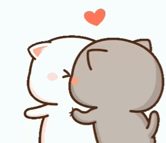

Hola, elige un tamalito
Ola, pasaba por aquí a dedicarte unas lindas palabras, no me explayaré mucho porque te lo quiero decir yo personalmente y con mi voz. Nos conocemos de hace poco, pero nos hemos conocido en gran medida, llevamos un mes de literalmente hablar todos los días casi todo el día; eso me gustó mucho, porque contigo siento comodidad, tranquilidad, no me siento juzgado, puedo hablar contigo de todo, contigo el tiempo siempre es de calidad y lo disfruto mucho; y siento que eso es muy importante, puedo estar contigo siempre y no me voy a hartar. Me gustas mucho de verdad, me encantas, eres hermosa, me gustan tus ojos, tu nariz, tus cejas, tu boca, tu voz, tu forma de ser, tu personalidad, me gusta que pensemos parecido en cuanto a como llevar una relación y todo lo que conlleva, siento que tenemos responsabilidad afectiva mutua y eso me gusta demasiado, nos preocupamos mutuamente. Me gusta mucho como demuestras cuando quieres a alguien, atiendes con detalles, afecto, atención, no lo descuidas, eres muy buena persona, eres muy empática, me gusta eso. Me gusta tu carácter, defiendes lo que quieres y a los que quieres, ya te he dicho que me gustaría ser más así. De verdad que este tiempo ha sido maravilloso, me siento y me he sentido muy feliz, me siento especial, querido, siento que te importo. Espero yo también hacer sentirte todo ese tipo de cosas, quiero estar contigo ahora y siempre. 